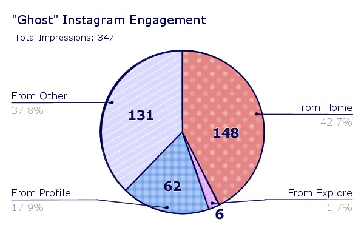

I created my first animated short film in the spring of 2023. I started this project for the group of people out there whose entire social experience is altered because of a genetic condition. People who struggle with their identity and self-image because they have to go their whole life correcting assumptions and justifying their culture. People at a young age who felt like their own presence was an anomaly and struggled to explain that feeling to others. People of color who drew oculocutaneous albinism from the genetic mutation lottery.
But I truly made this for the eight year-old me who endured as a group of older kids shrieked and ran away at the sight of me in the elementary school bathroom. They called me a ghost.
I posted "Ghost" to Instagram on International Albinism Awareness Day and it was boosted by the National Organization for Albinism and Hypopigmentation (NOAH) who shared it to their story. So my film reached a lot of people.
Here is a pie chart constructed from the post's engagment data.
The post had a total of 347 engagements with 131 engagements (42.7%) coming from accounts seeing the post from their home page. 62 engagements (17.9%) came from accounts who saw the post on my profile. 6 engagements (1.7%) came from accounts who saw the post on their explore page. And 131 of engagements (37.8%) came from accounts who saw the post from other sources.
[A retro TV channel advertisement break finished up]
TV Announcer: We now return with Rubik, the amazing cube!
[trumpet trill]
The Retroist: In the show, Rubik, this magical cube, fell out of the stagecoach of an evil magician.
And with the help of three siblings who could magically put this thing back together at super fast speeds, they
were able to harness Rubik’s innate magical ability, and help keep the Rubik out of the hands of the evil
magician.
The better episodes are when they are dealing with the magician, but there are episodes where they encounter
bullies, and normal sort of adventures like that.
Now if you have a magical cube that can do just about anything, you should have no problems, but him being
the Rubik's Cube, all you had to do was casually drop him and he gets completely scrambled so that you can’t
do anything about it.
And I cannot stress how frustrating I found it, that these kids were so good at solving it, when I couldn’t
solve two sides. I think in one episode, even an animal was able to solve it, that really bugged me.
But it kept me focused, eye on the prize. One of the cool things about Rubik the Amazing Cube is that the
three siblings, Carlos, Lisa, and Reynaldo Rodriguez, are all of hispanic origin, and it is one of the first
shows, if not the first children’s show, to have all the main characters be of hispanic extraction.
And we’ll talk a little bit about Manudo, and the theme song choice a little bit later. First we’ll talk a
little bit about the cast.
The Retroist: Michael Bell voiced Reynaldo, Angela Moya played Marla, besides voicework, she’s
probably best known for her
work in the films, “Gleaming the Cube” and “The Forbidden Dance”.
Jennifer Fjarda played Lisa. Not a tremendous amount of information on her, but Rubik the Amazing Cube
seemed like the high watermark in her career, although she was also in “Buddy Buddy” in 1981.
Michael Saucedo was Carlos. Saucedo was also a musician and a soap opera actor. Now I might know him best
for his work on Rubik the Amazing Cube, but if you’re a soap opera fan, he played Juan Santiago on General
Hospital from 1999 until 2001.
The voice of Rubik was provided by Ronald Gabriel Palillo, better known as Ron Palillo, who was an American
actor who passed away in 2012. He was Arnold Horshack on the sitcom “Welcome Back, Horshack” from 1975 to
1979. He had a very distinct voice, not what you’ll hear in Rubik the Amazing Cube.
To create the voice of Rubik, they took his voice, and altered it some, to give it that high-pitched sound.
So I imagine if I had encountered Ron on the streets I would have said to him, “Hey! Do the voice of Rubik!”
and he probably would have put his hand over his eyes and said “Ugh, not another one. I can’t do the voice,
kid. But I could do Horshack” and that would have been pretty cool too.
[in an impression of Horshack]
Ooh ooh, Mr. Kotter!
[back to his normal voice]
A lot of other people contributed great voicework to this, including Jack DeLion, Lori Facet, Bob Holt,
Tress McNeal, John Stevenson, Alan Young, and Janet Waldo, who I interviewed for the Jetsons podcast, if you
want more information on her. Now, with a little bit more about these very talented people, is Vic Sage with
“Why should I know this person?”
[electronic music trill]
Vic Sage: Hi friends! Vic Sage here. with “Why should I know this person?”. This time I’m going to be
taking
a look at legendary voice actor, Michael Bell. Michael Bell was born on July 30th, 1938 in Brooklyn, New
York.
He’s had a long and varied entertainment career with live action roles and numerous voicework. To date, his
internet movie database page lists 318 acting credits. From 1957 to 1972, Bell was seen in live action roles
for TV and films. Notable appearances include “Gomer Pyle: USMC”, “The Monkees”, “Get Smart”, and “Point
Blank” where he co-starred with Lee Marvin. “Mission Impossible”, 1970’s “Airport”, 1971’s “Brother John”
where he co-starred with Sidney Poitier. Mary Tyler Moore and Rod Serling’s “Night Gallery” in the segment
entitled, “Green Fingers”.
In 1972, Michael earned his first animated series voicework with “The Houndcats”, playing a character named
Stutz. That same year, he would voice Craig Robinson on the pilot episode for the “Lost in Space” animated
series, as well as the ABC Saturday superstar movie presentation two parter “Oliver the Artful Dodger” where
he performed the voice of the Artful Dodger.
Starting in 1973, he would bounce between live action and voice work jobs, with roles in “Speed Buggy”, the
new Scooby-Doo movies, “Ironside”, “Manixx”, “Devilin”, “Barnaby Jones”, the M*A*S*H TV series, the all new
super friends hour where he voiced half of the Wonder Twins as Zan. And in 1978, he would take on the dark
side, with “Challenge of the Super Friends” as the diabolic Riddler.
Peter and the Wolf, a musical composition written by Sergei Prokofiev
A narrator tells a children's story while an orchestra plays different instruments to illustrate different charcters.